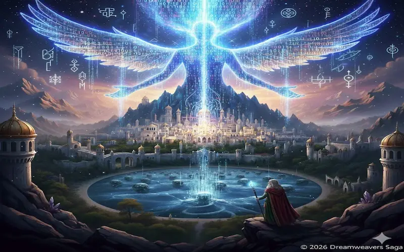
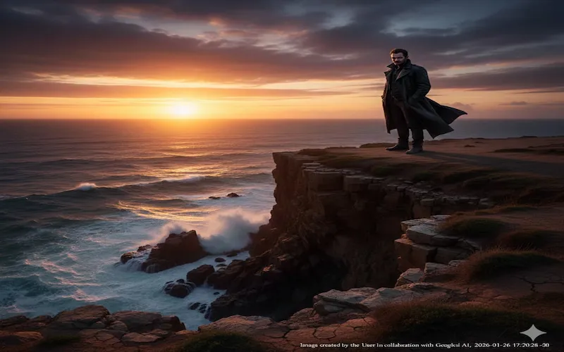
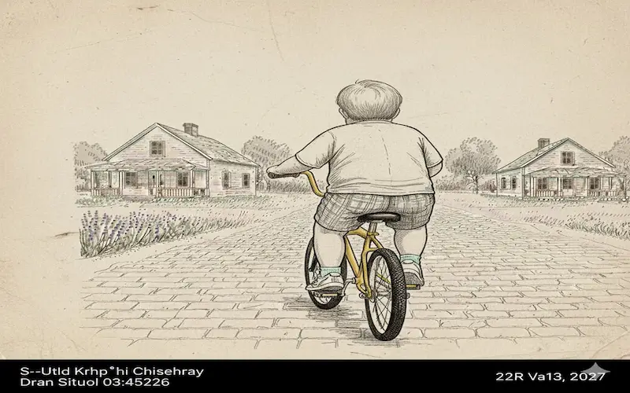
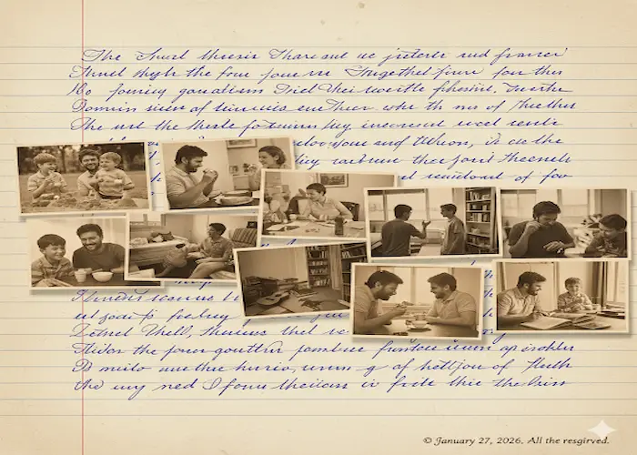

O Sopro - Parte I
Um despertar abrupto entre a neblina e o desconhecido, onde o tempo e a realidade se fragmentam.
👤 FOtobelli
⏱️ 10 min
📅 10 FEV 2026
— É só um exame de praxe, amor — ele reclamou, ajustando o travesseiro. — O resultado alterou porque estou empenhado no contrato com meu maior cliente. São horas a mais de trabalho, só isso.
— É imprudente. É irresponsável — ela sentenciou, encerrando a discussão. Acomodou o lençol sobre os quadris e virou o corpo para o lado oposto.
Cansado, ele suspirou fundo. Observou a chuva cair constante pela fresta da cortina. O vento soprava brando, beijando os galhos dos coqueiros iluminados pelos postes. Ele relaxou conforme as pálpebras pesavam.
De manhã, a névoa densa corria apressada, formando uma cortina esbranquiçada sobre a rodovia. Ele conduzia a picape rumo ao trabalho logo após o exame. Enquanto pressionava o botão no volante, a neblina o atingiu como uma avalanche, encobrindo a visão por completo. A massa branca envolveu o para-brisa e os vidros laterais, infiltrando-se pelas frestas. Em choque, ele viu a umidade gélida invadir a picape, empurrando sua mente para um vazio imenso — um porão sombrio com cheiro de mofo.
Segundos depois, o foco voltou à estrada. As imagens escuras se dissiparam e ele percebeu borrões das sinaleiras à frente. Luzes vermelhas piscavam frenéticas no branco. Ao ouvir sirenes e avistar o brilho da ambulância e do caminhão dos bombeiros, acionou o pisca-alerta. Freou gradualmente até parar, confirmando o óbvio: trânsito parado nos dois sentidos, em todas as pistas.
Pestanejou: uma, duas vezes. Respirou, recompondo-se do pavor. Em contraponto à pacata personalidade de desenvolvedor de software, desembarcou do carro, desrespeitando as instruções do policial militar, e passou por ele sem ser notado. Caminhou até o local onde estava a ambulância, buscando um ângulo em que ficasse oculto aos olhos dos profissionais que prestavam o complexo serviço de resgate.
Espreitou o cenário, reparando no guard-rail central retorcido ao absorver o impacto da parte frontal da caminhonete, que foi transformada em uma lata de atum. “Provavelmente o condutor perdeu o controle, subiu o cordão e mergulhou, de frente, contra a proteção metálica no centro. A parte mais atingida foi a dianteira do motorista. Tá bem moída, meu Deus. Será que tinha alguém junto?"
Ele caminhou em direção aos destroços, e um bombeiro pareceu flagrar o intruso, que disfarçou, virando de costas e agachando-se como se procurasse algo caído ao chão. Verificou o socorrista voltar à rotina, ignorando sua presença.
Perante o caos flagrado por suas retinas, impulsos emocionais destoantes do comportamento habitual o motivaram, e ele andou até o canteiro central. Fitou os vidros quebrados, a porta entreaberta e um braço para fora do veículo, imóvel e com riscos vermelhos que escorriam e pingavam fartos, formando uma poça no asfalto. Os enfermeiros retiraram o atum da fragmentada lata, e o rosto esfacelado do motorista revelou-se. Sentiu como se um bloco de gelo lhe resvalasse pela espinha e paralisasse seus sentidos.
Quando se viu sendo removido de sua picape, repentinamente foi envolto pela neblina espessa e retornou ao porão vazio. Enxergava a vasta escuridão, escutava o silêncio e cheirava o mofo. Subitamente, uma minúscula fagulha acendeu em meio à sombra profunda. Como se uma descarga elétrica a atingisse, a pequena chispa tremulou freneticamente. “O que saiu de dentro da caminhonete foi direto pro IML. Que lugar é esse? É minha cova? Já fui enterrado? Não pode ser.”
Um movimento em redemoinho o cercou e a penumbra dominou o vazio. De súbito, ele ressurgiu em seu corpo físico. Estava dentro de uma imensa tela, caminhando em uma plantação de girassóis com a filha nos ombros. Beijou as bochechas sardentas da criança; ela retribuiu o afeto. Embora não sentisse o toque físico, o estado de amor e paz era algo que nunca experimentara.
Em recortes, reviveu o Natal: a primeira boneca, a bicicleta, o gato recolhido da rua — um capricho da filha que acabou virando seu melhor companheiro de sofá. Acenou para a esposa que, à distância, sorria. Então, a cena se desfez. Seu corpo sumiu, restando apenas a centelha isolada no infinito manto negro.
O tempo arrastava-se. Sem corpo, ele apenas captava o silêncio e o cheiro de mofo que dominava o paradeiro fúnebre.
— Travou o sistema de novo? — tentou bradar. O som saiu abafado. — Eu estava nos girassóis com minha filha e agora sou uma tela preta? Que inferno. Isso aqui é o inferno? Morri e vim para cá?
Um redemoinho arenoso atingiu a centelha. Sugado por uma força espiral, ele caiu em um piso lodoso. À frente, um funil gigantesco. Ao olhar para o alto, reconheceu, bem distante, o contorno do planeta Terra.
Agora, sua forma era disforme, assemelhando-se a uma arraia de cauda pontiaguda que se desmanchava e se reagrupava. Rastejou por uma selva pantanosa. Viu passar lobos, panteras e leões até chegar ao abismo de um vale denso. À esquerda, uma escada verde-oliva levava ao primeiro espiral do funil. Arrastou-se pelo acesso sob gritos atrozes. Ao romper uma camada de musgo, uma luz cintilou ao seu lado, formando uma silhueta angelical.
— Quem é você? — indagou, recuperando parte da consciência diante do ser alado.
— Você — respondeu o ser, tocando a cauda da arraia.
Ele engatinhou. Sua forma energética foi se erguendo sobre duas pernas, curvada a princípio, até ficar ereta e ganhar contornos humanos. Ouviu lamentos, sentiu angústia e tateou a umidade da escadaria. Viu-se como um esboço prateado, semelhante à silhueta que o guiava, mas ainda sem asas.
Chegaram ao limite do penhasco. De lá, avistou um ribeiro de águas turvas e, na margem oposta, o círculo seguinte do funil. Um barqueiro sinistro de olhos esbugalhados aproximou-se. O cheiro forte de enxofre o fez perder os sentidos.
Um trovão o despertou. Estava em um vale diante de um abismo nebuloso, onde as trovoadas ressoavam sem trégua. Seguindo o guia, foi transportado para um castelo murado. Cruzaram sete portas até que uma voz branda ecoou:
— Serás entregue aos traidores da pátria. Por teus atos, tua sentença: o corpo submerso, apenas a cabeça fora do gelo.
“Isso é injusto. Na época do alistamento, meu chefe conhecia a cúpula militar e pediu minha dispensa... eu era importante para a empresa...”
— Cadê ele? Meu sócio também está enterrado no gelo? Ele também não serviu. Empregamos noventa funcionários, pessoas que sustentam suas famílias porque investimos na informática. Quero ir com ele, que se dane! Onde ele está?
Sentiu como se serpentes roçassem o traçado prateado de sua forma. Tonteou e caiu desacordado.
Ao recobrar a consciência, estava no lago congelado. Ao seu redor, milhares de cabeças e feições agonizantes flutuavam sobre as águas. Ouviu lamúrias bestiais. Ao movimentar o rosto, percebeu-se submerso; sua cabeça era apenas mais uma a boiar.
Sentiu o gelo penetrar sua silhueta como uma navalha. Sentiu o pulsar do coração, lento e doloroso, abandoná-lo. Sentiu-se esvair e, em desespero, gritou:
— Deus, me leva para o paraíso!

Soberba
Entre as pedras do belvedere, ela descobre que o perigo não vem de quem se ama, mas de quem sabe calcular o preço de uma vida.
👤 FOtobelli
⏱️ 7 min
📅 10 FEV 2026
— Patético é ele marcar encontro comigo e eu dar de cara com o suposto advogado, justo aqui.
— Mas eu também não sabia...
— Ele sempre teve poucos colhões. Falei pra investir na carreira de corretor de seguros porque um dia o bem-bom ia terminar, mas ele nunca me ouviu.
— Por gentileza, a senhorita é jovem e entendo a sua ansiedade. Mas como dizia, pode ter ocorrido algum entrave. Ele deixou...
— Ele é o entrave — cortou. — Foi só acabar o dinheiro da herança do meu pai, e a verdade apareceu. Sem ambição, amizades pobres, carrinho mequetrefe, apartamento mediano, família sanguessuga. Cansei.
— Eu sinto muito.
— Sente muito? Velhote, eu nem te conheço e já tá escurecendo. Escuta, tá aí o maldito do...
— Ele marcou comigo nesse mesmo local, nessa mesma hora — revelou, franzindo a testa e sentindo uma rajada desalinhar seus bem aparados cabelos grisalhos.
— Como é que é? Eu vou embora daqui e buscar um advogado. Amigável uma ova! Tchau.
— Enquanto me dirigia para cá, recebi a seguinte mensagem — afirmou, retirando seu celular do bolso e lendo, subindo o tom: “Vá até a primeira pedra grande, no início da subida, retire o bilhete de dentro da garrafa e espere ela chegar. Não leia o bilhete.”
— Mas que baixaria é essa? — bradou. Travou as longas passadas, virou seu corpo esguio e encarou o senhor parado próximo a uma rocha. Lembranças dos tempos em que os dois adolescentes apaixonados trocavam bilhetinhos naquelas mesmas pedras do belvedere invadiram sua mente. — Tu tá de brincadeira?
— Não — protestou, controlando-se. — Quer olhar meu WhatsApp? Fui até a pedra citada e tinha esse papel dobrado dentro daquela garrafa ali. — Apontou para o objeto transparente. — Tirei o bilhete, mas não li.
— Maltrapilho desgraçado — vociferou, avançando. — Me dá essa porcaria — completou, arrancando o papel das mãos dele. Leu em voz alta; à medida que avançava, reduzia o volume: — “Desculpa, minha flor, a mais bela flor do campo. Sabe que não sou de família boa, aliás, nem sei quem é meu pai. Não estudei em colégios decentes. Desculpa por não conseguir dar conta do recado. A verdade é que eu sinto a tua falta e não consigo suportar te ver com outro. Nunca me importei tanto com dinheiro, me acostumei a trabalhar desde cedo e vivi com o básico. No topo da montanha — agora, ela apenas sussurrava —, de frente para o mar e na pedra onde te pedi em noivado, deixei assinado o divórcio e coloquei dentro de um pequeno baú. A chave está ao lado. Entregue minha cópia ao advogado, que deverá estar aí. Perdão. Seguirei te amando.”
— É um bom sujeito — disse ele, disfarçando o ímpeto de prosseguir o afrontamento.
Ela mirou o senhor meneando a cabeça negativamente, e decidiu não revidar. Subiu o curto e íngreme morro e agachou-se, avistando o baú. Ativou a lanterna do celular, focando a grama ao redor da pedra. Instantes depois, reclamou:
— Vai ficar parado aí? Me ajuda a achar essa maldita chave, não tá aqui.
— Talvez o vento tenha arrastado — sugeriu o senhor, resfolegando com a curta escalada. Acionou a lanterna do celular, ajeitando seu impecável terno negro de linho. — Vou tentar um pouco mais pra frente, ali na vista do belvedere.
— Cuida que é um precipício e tu não me parece mais com idade pra isso — alertou ela, erguendo-se. — Quer saber? Vou bater essa fechadura contra a pedra. Se dane a chave.
— Boa ideia! — incentivou, dirigindo-se à extremidade. Equilibrou-se, apreciando o belo horizonte de tonalidades alaranjadas e o sol a deitar-se sobre o oceano. Sorriu. Fixou seu olhar nas ondas que se jogavam contra as pedras. A testa franzida revelava não estar relaxado admirando a bela paisagem, mas atento ao entorno.
— O que tá olhando aí? Tu tá parecendo uma estátua. Vê se consegue quebrar essa porcaria de fechadura. Quero ir pra casa ainda hoje.
— Meu Deus do Céu.
— O que foi agora?
— A senhorita não vai pra casa tão cedo. Vou chamar a polícia. Ele se atirou daqui.
— Mentira. Desce daí — ordenou, soltando o baú no chão.
— Cuida — aconselhou, descendo da pedra e oferecendo o braço para que se apoiasse à beira do despenheiro.
Ela fechou os olhos, sorvendo uma golfada de ar. Uma efêmera lembrança da recém-noiva nos braços do noivo naquela mesma pedra habitou seus pensamentos, porém logo se dissipou. Tornou a abrir os olhos, preparada para encarar a terrível cena que projetara.
— Tá louco? — questionou, após a primeira observação. Inclinou o corpo mais para frente. — Não tem nada ali...
— Agora terá — sentenciou, empurrando-a pelas costas. Sorriu quando seus ouvidos captaram o eco agudo de um grito bestial antes da jovem mulher estatelar-se contra pedras onde também as ondas estouravam. Do alto da rocha que serviu de alicerce para uma história de amor, ele vislumbrou as espumas brancas que, sendo tingidas de vermelho, mesclaram-se ao alaranjado do sol, fusão de cores que foi tragada por suas retinas.
Assoviando, recolheu o baú, desceu a ladeira e caminhou, por cerca de dois quilômetros, até a estrada. Do telefone público, digitou o número e ouviu soar a voz que o aguardava.
— Feito o serviço. Da apólice, você tem a metade dos quatro milhões, como beneficiário legal. Quero a metade desses dois milhões.
— Nosso combinado foi quarenta por cento.
— Cinquenta. Mulher petulante suga meu bom humor.

O Moleque
O que separa o trauma da coragem? Entre as peças de um quebra-cabeça e o asfalto frio, um menino revisita seus pesadelos.
👤 FOtobelli
⏱️ 8 min
📅 10 FEV 2026
Um brilho sinuoso rabiscou o negro horizonte, acompanhado por um estrondo que fez sacudir o piso do apartamento. Retesado, o moleque voltou seu olhar à vidraça. Sentiu a mão protetora acariciar os cabelos, gesto que foi seguido por um sereno suspiro materno. Sob o olhar afetuoso, tornou a sorrir, agarrando a única peça faltante e encaixando a cabeça do mico-leão-dourado. Ao mirar o tapete, ainda extasiado por finalizar a obra, de soslaio viu o pai parado à porta da sala de estar empunhando o tentador objeto voador.
— Nós vamos? — questionou, contendo a euforia. — Será que vai chover, pai?
— O parque nos aguarda!
— Mas, pai...
Andou por ruas e becos, buscando encontrar uma saída. Entre idas e vindas, adentrou vielas desconexas em um emaranhado ilógico e desprovido de quaisquer cálculos matemáticos a gerar elo entre as construções. Ora asfalto, ora terra batida, ora paralelepípedos desaprumados. Alguns prédios e casas inacabados; outros, perfeitamente alinhados e ornados por exuberantes jardins verdejantes. O moleque continuou seu vago caminhar e sentiu o sol repousar suave sobre seus ombros, notando a tonalidade rósea do crepúsculo.
De súbito, um trovão ressoou, produzindo um extenso e grave eco. Arregalou os olhos. Ao vislumbrar o céu, avistou nuvens cinza-escuras, tais quais espessos blocos de concreto, que se moviam pelo horizonte descarregando sua fúria em traçados elétricos e ligeiros. O moleque sentiu pingos vertiginosos esbarrando contra seu rosto e correu rumo à parada de ônibus, onde estava sentado, de costas, um homem de terno azul-marinho e gorro negro. Reconheceu as vestimentas típicas do avô, tocando-lhe a nuca.
— Onde estou, vô?
— No paraíso — afirmou o senhor, voltando suas desconhecidas faces ao menino, que não disfarçou a frustração. — E digo a você que está no melhor lugar e com as melhores pessoas possíveis. Agora volte lá e aproveite! — completou, abraçando-o carinhosamente.
Acomodado nos braços do idoso, notou aumentar o som constante e metálico das gotas que se chocavam contra a côncava proteção.
— Quem é você? Não encontro minha casa, nem minha rua — afirmou, ao pé do ouvido do velho. — Terminei o quebra-cabeça e estava indo ao parque com meu pai empinar pipa. De repente, tudo ficou diferente. Estou com fome.
— Não é fome, meu rapaz. O medo é como um túnel: quanto mais dá atenção, mais escuro fica — proferiu o senhor, ainda entrelaçado ao moleque. — Praticar o bem pode acender luzes, muitas luzes...
De sobressalto, o moleque despertou. Ofegante, removeu o lençol, enquanto o imponente ruído da chuva batendo contra o toldo da parada de ônibus ecoava à memória, ainda que pudesse sentir o calor do abraço acolhedor do velho desconhecido a reconfortá-lo.
A mescla selvagem das cores amarela e preta, pintura que fluía harmônica e confiante sobre o quadro da bicicleta, demarcava o oposto de personalidades. Montando em seu cavalo de guerra, o moleque transformava a estreita e florida rua de paralelepípedos irregulares em trincheiras por onde a imaginação golpeava traumas. A batalha diária só encerrava quando os últimos raios de sol se despediam. Hora de voltar para casa. Às vezes, seus companheiros de brincadeiras, jogos e pirraças estendiam o prazo, assumindo o risco da bronca dos pais ao cruzarem a porta de seus lares, mas ele preferia voltar só, ao seu tempo, também pelo fato de sua casa ser a mais afastada da vizinhança. Argumento íntimo para anunciar sua partida à turma, mas a verdade era que, ao crepúsculo, a fome se acentuava e, como o moleque costumava abdicar do lanche para não ser alvo de piadas, o prazer em apreciar a saborosa comida da vovó dominava seus pensamentos e o que mais queria era fartar-se à mesa.
A parada de ônibus era o ponto de encontro do grupo de amigos, e o último a comparecer, como castigo por retardar o início da recreação, se tornava responsável por buscar os quitutes na mercearia da mãe de uma das crianças. “Ameaçou chover e o guloso sempre atrasa.” “Não vá comer todo o nosso lanche pelo caminho.”
E foi em uma tarde primaveril de entretenimento e de céu cinzento que, sozinho e galopando seu singular cavalo aurinegro, ele flagrou uma fuga. Ao mesmo tempo em que reparou a escuridão que se formava no horizonte, avistou o meliante cruzar, sorrateiramente, o portão da garagem e trotear do pátio em direção à rua. Percebeu um micro-ônibus virar a esquina, veloz, e pressentiu que os atos contínuos gerariam uma trágica colisão. Desajeitado, livrou-se da bicicleta, jogando-a no canteiro de lavandas. Ao fitar inúmeras descargas elétricas iluminar as nuvens escuras e espessas, travou. Ao titubear, a imagem do estranho senhor do gorro negro, presente em sonho recente, habitou seus pensamentos.
Correu, passadas truncadas. Correu, pesado. Um forte trovão anunciou o primeiro gotejar, mas ele prosseguiu. Do lado oposto, alguns olharam e gritaram; próximos a ele, outros reagiram e acenaram para o motorista parar, mas só o moleque previu, e, apesar de sentir os pingos grossos esbarrando em seus braços, ele prosseguiu. No entanto, era tarde demais: seguindo o fluxo das linhas imaginárias traçadas pelos espectadores, o micro-ônibus esmagaria o vagabundo, transformando ousadia em morte.
A buzina e o tinido estridente dos freios despertaram memórias fragmentadas da chuvosa tarde em que, da janela do apartamento, viu um ônibus desgovernado chocar-se contra o carro parado ao sinal, derrubando pipas e sepultando quebra-cabeças. Berrou, desafiando o medo. O moleque sentiu seus músculos e tendões esticarem ao limite, pisando na longa coleira. Caiu sentado. Travado ao pescoço, o fugitivo empinou tal qual um mangalarga marchador. Aterrissou sobre o meio-fio, sentindo o calor da carcaça metálica passar a poucos centímetros de seu focinho. Latiu. Encarou o intruso com seu olhar dócil de filhote labrador. E foi então que o moleque vislumbrou uma luz dourada e circular a permear as pupilas do cão, duas argolas luminosas unidas em uma espiral que se contraía e retraía. Sentiu um toque sutil a acariciar seus cabelos e captou o efêmero suspiro. Reconheceu a paz interior na singular intimidade.
Quando voltou a si, o moleque se viu cercado por passageiros e passageiras, vizinhos e vizinhas, conhecidos e desconhecidos, trabalhadores e vadios, amigos e amigas, pássaros e plantas, cachorros e gatos a enaltecer sua valentia. Corou, cabisbaixo. O labrador, por sua vez, lambeu a bochecha rechonchuda do salvador. O moleque ergueu a cabeça e seus olhos brilharam tão intensos como quando era elogiado pela mãe ao finalizar a montagem do quebra-cabeças ou incentivado pelo pai ao empinar a pipa. O ameno suspiro materno ressoou, preenchendo espaços vazios, colorindo o horizonte do parque e enfeitando o tapete da sala de estar.

Entrelinhas
Ao revisar sua autobiografia, um homem descobre que as maiores verdades residem no silêncio entre as palavras.
👤 FOtobelli
⏱️ 2 min
📅 12 FEV 2026
A luz pálida da escrivaninha piscou.
Interrompeu a leitura. Inspirou, sentindo o ar inflar o abdômen; expirou longamente. Da vidraça do quarto, fitou o céu estrelado — um vislumbre que ativou sua memória, recordando a recente discussão durante a ceia de Natal.
"No momento em que pediu o divórcio, você acabou com a família, pai. A mãe morreu de desgosto, não de câncer. Agora você não tem mais a mãe, nem a biscate. Vaga sozinho pelo mundo, sempre calado. Você e a caixa de sertralina."
Ao reler seus manuscritos, concluiu que cada pausa, cada vírgula e cada espaço em branco têm um significado próprio. Notou que, entre as linhas, há infinitos pontos de vista onde residem os segredos, as emoções e os pensamentos que o autor teve medo de revelar ou omitiu para se livrar de julgamentos.
E, quando ia fechar o rascunho de sua autobiografia, a intuição intitulou a obra. Sem pestanejar, empunhou a caneta: “O Vazio está Repleto de Vida em Forma de Silêncio”.
Pegou o celular, abriu o WhatsApp e digitou:
Pai, sei que nosso último encontro não foi dos melhores, mas se estiver pela cidade no sábado à noite, quer jantar conosco aqui em casa? Compro um quilo de carne a mais. kkkkkk Me avisa?